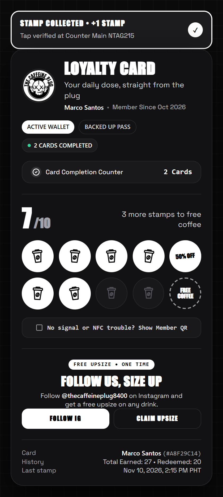
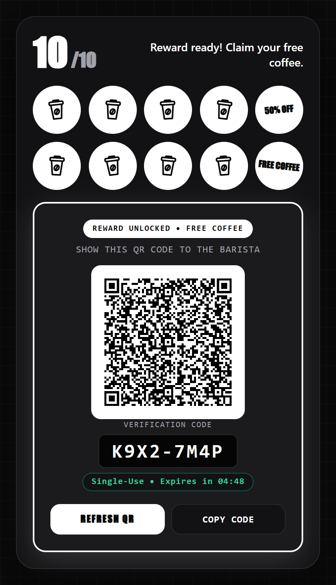
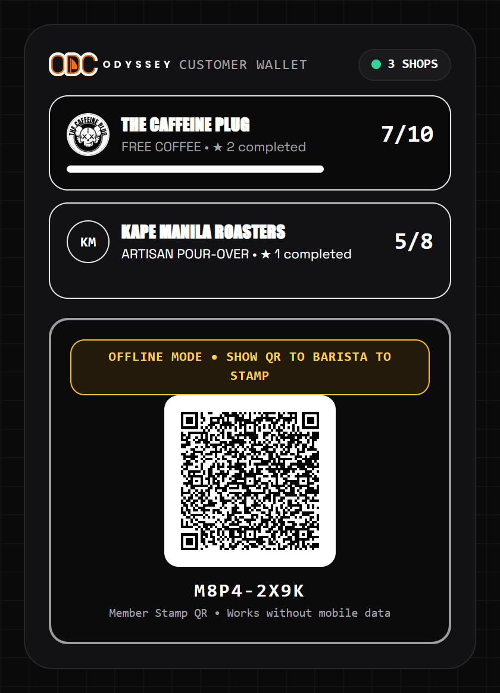
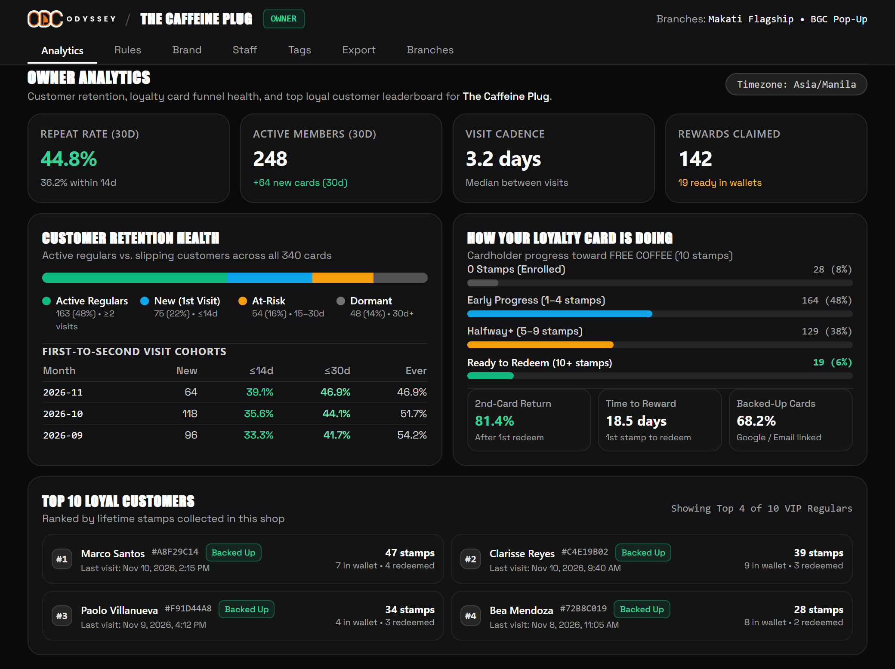
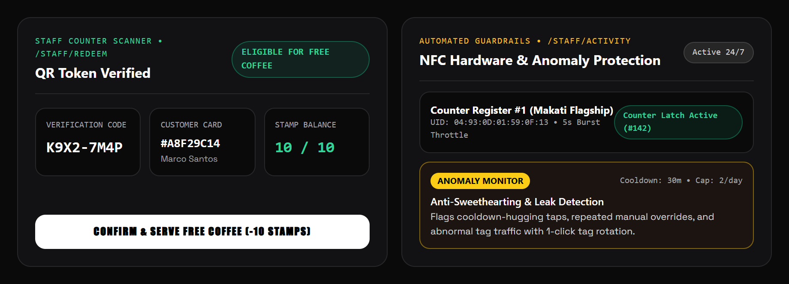

A smarter digital loyalty experience that helps businesses reward customers, encourage repeat visits, and understand customer retention — without requiring an app download.
Built for busy counters: Customers simply tap your physical NFC card (or scan your counter QR standee) with their phone. Their custom-branded digital stamp card opens instantly in their mobile browser.


Traditional loyalty apps fail because customers refuse to download a 60MB app or fill out forms while holding up your register line. ODYSSEY works instantly on the phone already in their hand.
Your staff taps a physical NFC card against the customer's smartphone — or first-time visitors scan your acrylic counter QR standee.
Their branded digital loyalty card opens immediately in their mobile browser and records their stamp with a tactile stamp animation.
Customers see how many stamps they need for their next reward, unlock halfway milestones, and back up their pass with Google or Email.
Once eligible, customers tap to reveal a 5-minute single-use QR code. Your staff scans it with the built-in camera scanner to serve the reward.
Custom shop branding, live stamp grid, completion counter & Instagram perk.
Cryptographically signed single-use QR code prevents screenshot reuse.
Collectible shop cards plus an Offline Member QR when mobile signal drops.

Every feature in ODYSSEY is engineered to solve a real commercial problem: accelerating repeat visits, growing your social presence, and protecting your profit margins.
Match your card's stamp slots to your exact business type from the Brand Console — with live preview and automatic contrast validation.
Paper stamp cards give you zero data. ODYSSEY turns every counter tap into real-time retention intelligence — answering whether first-time buyers return, how often regulars visit, and who your Top 10 VIP customers are.

Measures what percentage of first-time customers return on a distinct calendar day within 14 and 30 days — never miscounting two drinks bought on the same day.
Automatically partitions your entire member base into Active Regulars, New (1st Visit), At-Risk (15–30d inactive), and Dormant (30d+) so you spot churn early.
See your highest-value regulars ranked by lifetime stamps, complete with resolved Google/Email display names, card codes, rewards claimed, and last visit date.
Know the exact median number of days between repeat customer visits and the median days required for a member to complete a full reward card.
See how many customers are halfway to a reward right now, how many rewards are ready in wallets, and what percentage keep stamping after their first redemption.
Compare monthly customer acquisition cohorts side by side to see if new menu launches, promos, or branch openings improve 14-day and 30-day retention.
You don't need to police stamps at the register or integrate with complicated POS software. ODYSSEY enforces your stamping rules automatically and gives your staff a 1-second verification workflow.

Automatically enforces a minimum wait between stamps (e.g., 30 mins) and a daily limit per customer (e.g., 2 stamps/day), plus a 5-second burst throttle on each NFC card.
Supports NTAG215 hardware tap-counter latching and automatic browser URL scrubbing so customers cannot bookmark, copy, or share tap links.
Reward QR codes expire in 5 minutes and lock after a single scan — completely eliminating screenshot sharing and double redemptions.
Flags unusual activity automatically — including cooldown-hugging taps, repeated manual stamps, and tag leaks — with 1-click NFC tag rotation.
If a customer has no mobile data or a phone without NFC, their card displays a signed Offline Member QR that your staff can scan in 1 second.
Works alongside any cash register, tablet POS, or cash/GCash setup from day one — zero IT setup or expensive counter hardware required.
| Traditional Paper Cards | ODYSSEY Digital Loyalty |
|---|---|
| ×Easily lost, washed, or forgotten at home | ✓Stored on the customer's phone with Google & Email backup |
| ×Manual rubber stamping slows down the till | ✓Instant 2-second NFC tap (plus offline Member QR fallback) |
| ×Difficult to stop fake stamps or staff over-stamping friends | ✓Automated cooldowns, daily limits, hardware counters & anomaly alerts |
| ×No customer retention data or visit history | ✓Real-time 14d/30d repeat rates, cohorts & Top 10 VIP leaderboard |
| ×Static print design that wears out and requires reprinting | ✓Custom-branded interactive digital cards with Instagram growth perks |
| ×Manual visual check of punched holes at redemption | ✓Cryptographic, time-limited, single-use QR reward verification |
We handle the technical setup so you and your team can focus on serving customers. Your shop can test a customized digital loyalty card on a trial workspace before committing.
Send your business logo, preferred card background and accent colors, shop tagline, and stamp icon choice.
Choose how many stamps unlock a reward, your reward name, stamp cooldown, daily cap, and optional Instagram upsize perk.
Get your live custom-branded digital card, owner & staff logins, programmed NFC counter cards, and counter QR standee.
Tap customer phones at the register, verify rewards with a quick QR scan, and track repeat visits live on your Owner Console.
Let's build a loyalty experience designed around your business. Request a customized trial card with your logo and colors to test right on your phone.